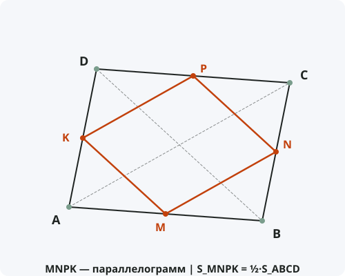

Теорема Вариньона
Формулировка
Середины сторон любого четырёхугольника являются вершинами параллелограмма. Площадь этого параллелограмма равна половине площади исходного четырёхугольника.
Обозначения
Пусть дан произвольный четырёхугольник ABCD.
M — середина стороны AB.
N — середина стороны BC.
P — середина стороны CD.
K — середина стороны AD.
Тогда MNPK — параллелограмм, и S_MNPK = ½ · S_ABCD.

Доказательство (часть 1: параллелограмм)
Доказательство (часть 2: площадь)
Теорема доказана полностью.
Следствия из теоремы
- Параллелограмм Вариньона является ромбом тогда и только тогда, когда диагонали исходного четырёхугольника равны.
- Параллелограмм Вариньона является прямоугольником тогда и только тогда, когда диагонали исходного четырёхугольника перпендикулярны.
- Параллелограмм Вариньона является квадратом тогда и только тогда, когда диагонали исходного четырёхугольника равны и перпендикулярны.
- Периметр параллелограмма Вариньона равен сумме диагоналей исходного четырёхугольника.
- Теорема справедлива для любого четырёхугольника, включая невыпуклые и самопересекающиеся.
Примеры применения
Пример 1. Дан четырёхугольник ABCD с диагоналями AC = 10, BD = 8. Найдите периметр параллелограмма Вариньона.
Решение: Стороны параллелограмма равны половинам диагоналей: MN = AC/2 = 5, NK = BD/2 = 4. Периметр = 2(5 + 4) = 18.
Пример 2. Диагонали четырёхугольника равны 12 и 16 и перпендикулярны. Определите вид параллелограмма Вариньона.
Решение: Диагонали перпендикулярны, следовательно, параллелограмм Вариньона — прямоугольник. Диагонали не равны, значит, это не квадрат, а именно прямоугольник.
Пример 3. Площадь четырёхугольника равна 48. Найдите площадь параллелограмма Вариньона.
Решение: S_MNPK = ½ · S_ABCD = ½ · 48 = 24.
Историческая справка
Теорема названа в честь французского математика и механика Пьера Вариньона (1654–1722), который опубликовал её в 1731 году в работе «Elemens de Mathematique».
Вариньон был одним из первых, кто систематически применял математический анализ к механике. Его геометрическая теорема стала классическим результатом в планиметрии.
Интересно, что сама теорема была известна и до Вариньона, но он дал ей строгое доказательство и исследовал свойства полученного параллелограмма.
Интересные факты
- Параллелограмм Вариньона иногда называют «параллелограммом середин».
- Центр параллелограмма Вариньона совпадает с точкой пересечения средних линий четырёхугольника (отрезков, соединяющих середины противоположных сторон).
- Теорема Вариньона — частный случай более общей теоремы о том, что аффинный образ параллелограмма — параллелограмм.
- В компьютерной графике теорема Вариньона используется для сглаживания полигональных сеток (subdivision surfaces).
- С помощью теоремы Вариньона можно легко доказать, что средние линии четырёхугольника пересекаются в одной точке и делятся ею пополам.